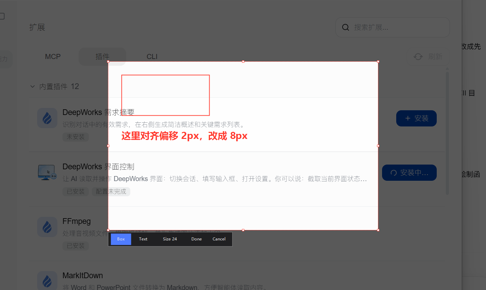

TOOL / DEEPSEEK HARNESS PLUGIN
DSH/SNIP
Snipaste 风格的截图标注插件。任意界面按 F1，整屏定格压暗，框选区域后画红框、写文字，完成后标注图自动进入对话框。
TYPE 桌面插件
CORE PowerShell + WinForms
HOTKEY F1
PLATFORM Windows 10/11
LICENSE MIT
01
交互流程演示
点击右侧步骤切换视图
CAPTURE SESSION / LIVE PREVIEWREC

01 / FREEZE FRAME
02 / SELECT REGION
03 / ANNOTATE
04 / COMMIT
↑ 图中高亮框为演示标注，原图为插件真实运行截图 · 来源：dsh-snip/docs/overlay.png
02
设计要点
ENGINEERING NOTES
ARCHITECTURE
宿主半 + 浏览器半
lib/index.js 拉起浮层与热键助手；client/index.js 只负责一颗按钮和轮询取结果。两端通过文件队列通信，不用 stdio 管道。
GLOBAL HOTKEY
真正的系统级 F1
RegisterHotKey 抢注 F1，常驻助手在按下时拉起同一个浮层。父进程消失后 300 ms 内自杀，不留孤儿进程、不占着热键。
ENCODING
纯 ASCII 的 PowerShell
overlay.ps1 全 ASCII 编写，规避 PowerShell 5.1 的编码坑。全屏 TopMost 窗口抓的是浮层出现前一帧，不会截到浮层自己。
INSTALL
一条命令安装
dsh plugin --profile desktop add github:XXP-AI-SPACE/dsh-snip
装完冷启动桌面端，浏览器半刷新页面即可。
展示说明 / DISPLAY NOTE这是一个 Windows 桌面插件，核心逻辑是本地 PowerShell 脚本，无法在网页中真实运行。本页用真实运行截图 + 分步高亮演示它的交互流程。完整源码、安装与自检命令见
README.md 及 GitHub 仓库。